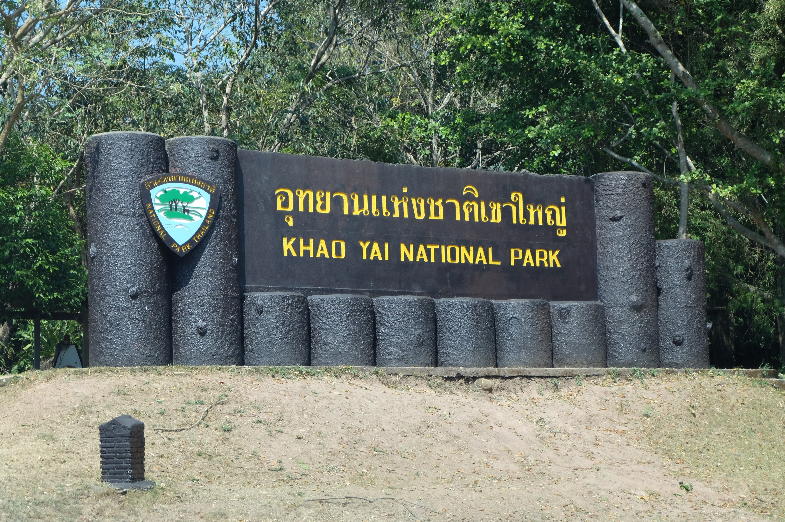

ข้อมูลทั่วไป
- ครอบคลุมพื้นที่ใน จ.นครราชสีมา ปราจีนบุรี สระบุรี และนครนายก
- ระบบนิเวศหลากหลาย: ป่าดิบ / ป่าเบญจพรรณ / ภูเขา / น้ำตก
- เป็นส่วนหนึ่งของมรดกโลกดงพญาเย็น–เขาใหญ่ (UNESCO)
อยู่ที่ไหน / การเดินทาง
- ที่ตั้ง: อุทยานแห่งชาติเขาใหญ่ ครอบคลุม 4 จังหวัด — จุดทางเข้าหลักฝั่งปากช่อง (โคราช) และฝั่งนครนายก/ปราจีนบุรี
- รถยนต์: จากกรุงเทพฯ ~180–220 กม. ใช้ทางหลวง 1 → 2 → 305/33/304 แล้วเข้าสาย 2090 (ฝั่งปากช่อง) หรือ 305/33 ไปด่านนครนายก/ปราจีน
- รถไฟ/รถบัส: กรุงเทพฯ → ปากช่อง แล้วต่อรถ/แท็กซี่เข้าด่านอุทยาน
- ทัวร์: มีทัวร์ดูสัตว์/เดินป่าจากย่านปากช่องและกรุงเทพฯ
สิ่งที่น่าสนใจ / ไฮไลต์ / กิจกรรม
- เดินเส้นทางธรรมชาติและเที่ยวน้ำตก เช่น เหวนรก / ผากล้วยไม้
- ดูสัตว์ป่า (ช้าง เก้ง นก ลิง) ช่วงเช้า / เย็น
- ชมวิวมุมสูง / จุดชมวิว
- สำรวจถ้ำน้ำ / จุดน้ำไหล
- นั่งรถชมธรรมชาติ / ขี่จักรยานเส้นทางลูกรัง
เวลาเปิด / ค่าเข้าชม / ข้อจำกัด
- เวลาเปิด: โดยทั่วไปเช้า–เย็น (ขึ้นอยู่กับด่านทางเข้า)
- ค่าเข้าชม: คนไทย / ต่างชาติ — ควรตรวจสอบอุทยานฯ
- บางเส้นทางปิดในฤดูฝนหรือช่วงบำรุงรักษา
เคล็ดลับ / คำแนะนำ
- ออกเดินทางเช้าหรือพักค้างคืนเพื่อชมสัตว์กลางคืน
- ใช้ไกด์ท้องถิ่นสำหรับชมสัตว์ / เส้นทางดูสัตว์
- พกร่ม / เสื้อกันฝนช่วงฤดูฝน
- จองที่พักล่วงหน้า โดยเฉพาะในฤดูท่องเที่ยว
ที่พักแนะนำ (ตัวอย่าง)
| ระดับ | ชื่อที่พัก | ราคา/ข้อดี |
|---|---|---|
| พรีเมียม |  Muthi Maya Forest Pool Villa Resort Muthi Maya Forest Pool Villa Resort | ~ 8,000–15,000 บาท/คืน — วิลล่าพร้อมสระวิวป่า |
| กลาง |  Recall Isaan Concept at Khaoyai Recall Isaan Concept at Khaoyai | ~ 2,500–4,500 บาท/คืน — บรรยากาศดี ใกล้อุทยาน |
| กลาง-ประหยัด |  Charlee Khaoyai Charlee Khaoyai | ~ 1,500–3,000 บาท/คืน — ห้องดี ราคากลาง |
| โฮมสเตย์ |  รีสอร์ท/เกสต์เฮาส์รอบขอบอุทยาน รีสอร์ท/เกสต์เฮาส์รอบขอบอุทยาน | ~ 500–1,500 บาท/คืน — ประหยัด ใกล้ธรรมชาติ |
ข้อมูลย่อ
จังหวัด: นครราชสีมา / ปราจีนบุรี / สระบุรี / นครนายก
ประเภท: ป่า / ภูเขา / อุทยาน
เหมาะฤดู: ตลอดปี (ฤดูหนาวยอดนิยม)
ให้ระบบแนะนำทริป